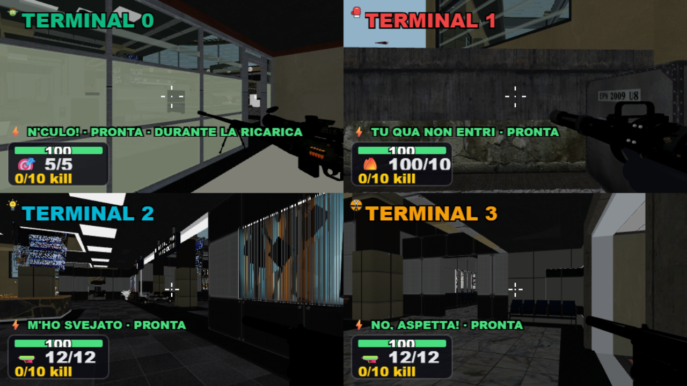
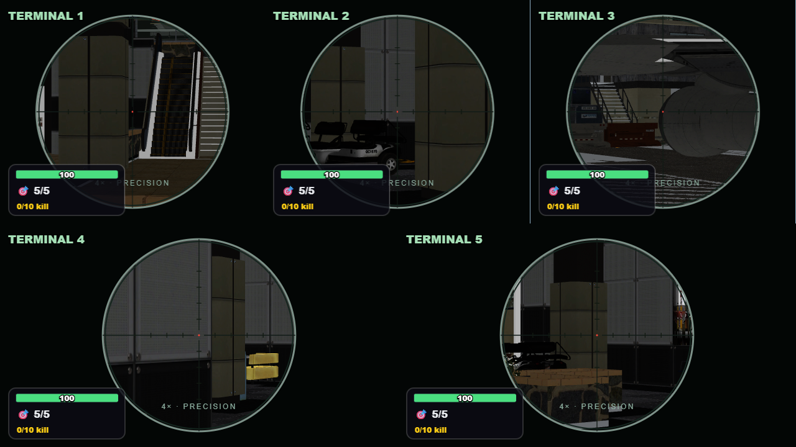
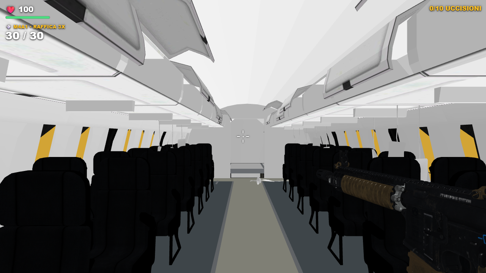
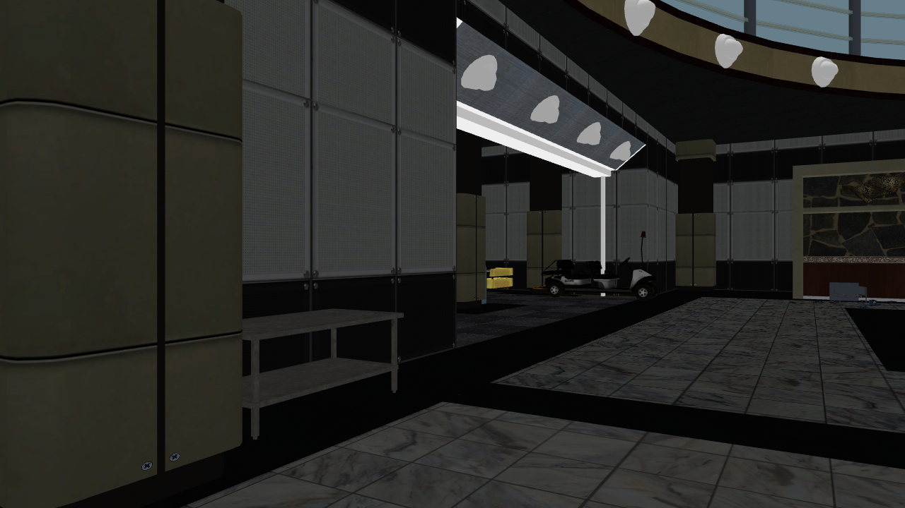

PARTY GAME / SPARATORIA
Terminal 2.1
Attesa fino al caricamento effettivo, camera stabile durante morte e respawn, ottica utilizzabile e materiali corretti. Preservate le sei armi attuali e la sola Ray Gun rossa.
19 SPAWN VERIFICATI41,4 → 53,2 FPS853 → 518 DRAW CALL
Confronto su RTX 3050, 1280×720, cinque visuali e scala 1, nelle stesse posizioni. Campioni brevi del renderer.
Apri il giocoReport e verificheAvvio nella mappa

Ottica sniper in cinque visuali

Arma leggibile nell'aereo

Materiali e superfici
